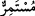
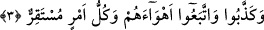

“
/Müstemirr” kelimesinin “kuvvet” anlamında olması mümkündür. Böyle olunca,
“istimrar” kelimesi, “giderilmesi imkânsız, müstahkem ve çok kuvvetli” anlamına gelir.
Yahut “bütün sihirleri alt eden şiddeti kuvvetli” mânâsınadır. “Kureyş müşriklerinin
temennîleri ve arzuları yönünde, zâil olup giden, yakında bir şey kalmayacak olan”
mânâsına geldiği de söylenmiştir.
3. Yalanladılar ve kendi heveslerine uydular. Halbuki her işin ulaşacağı yeri
vardır.
Peygamber (s.a.)’i ve mûcizelerden gördüklerini “yalanladılar ve kendi heveslerine
uydular.” Ortaya çıktıktan sonra hakkı reddetmek gibi, şeytanın kendilerine süslediği
hevâ ve heveslerine uydular. Yahut, ayın ikiye ayrılması mûcizesini yalanladılar ve
kendi heveslerine uydular. “Kameri büyüledi” veya “bizim gözlerimizi afsunladı”
dediler. Halbuki ay kendi eski hâlindedir, ona hiçbir şey dokunmamıştır. Bütün bunlar
onların bozuk fikirleridir.
Kötü kimselere kötü zan beslemek gerekir,
İnsanlardan ayrılıp köşeye çekildim, pusu kurdum zannettiler.
“Yalanladılar, heveslerine uydular” fiillerinin mâzî sîğasıyla önce geçen, “yüz
çevirirler, derler” tarzında geçen geniş zamanlı fiillere rağmen, geçmiş zaman fiili
olarak zikredilmeleri, yalanlama ve heveslerine uymanın, onların eski âdetlerinden
olduğunu belirtmek içindir. Bunda ayrıca, dünya ve şehvetlerinin denizinde boğulan ve
iyilikten, faziletten mahrum olanlara da bir işâret vardır. Çünkü, onların kalplerine,
Allah’a dönmek, Peygamber’e uymak, dünya sevgisini ve şehvetlerini terk etmek fikri
geldiği zaman, bu Rahmânî fikirden yüz çevirirler, onu kendilerinden uzaklaştırırlar, ona
iltifat etmezler. Aksine, içinde bulundukları dünya sevgisini, nefis ve heveslerine
uymayı daha da artırırlar. Rahmânî fikri yalan sayarlar. Çok zaman bazıları, rüyâlarında,
üzerlerindeki ipek gömlek üstüne fakirlerin hırkasını giydiklerini görürler. Kendilerini
maddeperestlikten soyutlanmış sanırlar. Bu rüyalar da gösterir ki, onların madde
sevgisinden uzaklaşması gönülden ve içtenlikle değil, görünürdedir. Sığ ve kabukta
kalan yok olma mülâhazası fayda vermez.
“Halbuki her işin ulaşacağı yeri vardır.” Yâni işlerden her biri yerini bulacaktır.
Şüphesiz ideali üzerinde karar kılacağı bir amaca ulaşmaktır. İşte bu cümleden olarak,
sevgili Peygamberimiz’in mûcizesi de ulvî şanı ve hakikatinin ortaya çıkacağı bir
amaca ulaşacaktır. Üzerine varıp yerleşilecek olan yerin açık ve belirlenmiş olmaması,
açıklamağa gerek olmayacak durumun zâhir olduğuna dikkat çekmek içindir. Yahut,